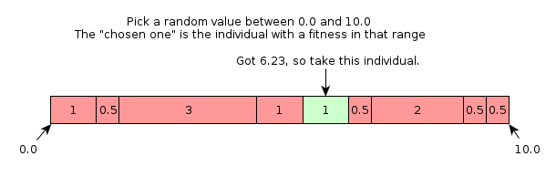

Roulette Tree
A roulette tree (rtree) is a data structure aimed to speed up selection phases in evolutionary algorithms, specifically when one pick individuals for a new generation based upon fitness-proportionate selection methods. It is asymptotically better than current solutions, and will consequently run faster for large populations.
Quickstart
To build the rtree and see it in action, fetch the code from git and
build the thing. Assuming you have git, make
and gcc, you just have to do this:
git clone https://github.com/hyPiRion/roulette-tree.git rtree
cd rtree
make
To see an explanation on how it works, you can do as follows. This
requires graphviz installed (more specifically, dot):
bin/main
cd imgs
make
A sequence of images from test-00 to test-11 should now have been generated. View them in sequence to "comprehend" what's going on.
The Problem
The general problem can be described as follows: You have a population of individuals, where you want to pick some percentage of the population based on how fit they are (their fitness). However, you would avoid picking a single individual multiple times, and you want to to have randomness so you don't always pick the top \(n\) best individuals all the time (to keep diversity in the population).
As an example, let's say we have three different objects: \(A\), \(B\) and \(C\). \(fit(A)=3\), \(fit(B)=2\) and \(fit(C)=1\). Then, we want that, on average, \(A\) will be picked \(^3/_6\) of the time, \(B\) will be picked \(^2/_6\) of the time, and \(C\) will be picked \(^1/_6\) of the time.
The way this is usually done is by simulating a roulette wheel: We list all the individuals we have, and let the individual hold a piece of the roulette wheel proportional to the individual's fitness. To pick an individual, we pick a random number and let the individual which contains the number in its fitness interval. See the figure below for an example.
 Example of selection.
The two standard ways of doing this sort of simulation is done by either using an array, or by using a linked list.
Linked List solution
The linked list solution is the easiest to understand conceptually. The structure is simply the total fitness score of the population, along witha linked list with the individuals and their fitness score, To randomly pick an individual, you pick a random number, \(d < fit_{total}\) and iterate over the linked list. If the current individual's fitness is higher than \(d\), we pick the individual. If not, decrement \(d\) with the fitness of the individual and continue to next element. Now, if you want to remove the individual, you can do so while you're here (either by keeping track of the previous individual or by using a doubly linked list). Both operations take \(\mathcal{O}(n)\) time, which is not exactly good for large populations.
Inserting an individual is easy and fast, however. Just put the individual as the first element in the list, and you're done. That takes \(\mathcal{O}(1)\) time.
Array-based solution
The array-based roulette utilizes binary searches to reduce the speed of random picks. We keep track of the total fitness score, and an array containing the cumulative fitness sum up to this individual, along with the individual itself.
To perform a random pick, pick a random number \(d < fit_{total}\) as before. Now, perform a binary search where you go down if \(d < c\), where \(c\) is the cumulative sum at the current individual. If \(c \leq d < (c + fit)\), we've found the individual we wanted to find. If \((c + fit) \leq d\), we go up. This gives us \(\mathcal{O}(\log n)\) in asymptotic runtime for random picks.
Unfortunately, this is not sufficient for random pops: We must remove the individual, and update the new cumulative fitness for every element after the current one. This takes \(\mathcal{O}(n)\) time.
If one double the capacity of the array whenever the capacity is filled, then adding a new element takes \(\mathcal{O}(1)\) amortized time.
Roulette tree
It is possible to improve the asymptotic time taken to randomly pop an element, at the expense of a slower insertion algorithm. This is what the rtree does: Sacrifices insertion speeds for increased random pops.
The roulette tree is very complex compared to the other structures, but you can think of it as a red-black tree combined with a fenwick-tree. This makes both insertion, random picks and random pops take \(\mathcal{O}(\log n)\) time.
Comparison
Different needs for different people. If you need to repeatedly pop random individuals, I suggest going for the roulette tree. Otherwise, the array-based solution should handle most of your use cases. The linked list implementation is effectively useless, you can in all cases replace it with the array based one and get a speedup.
| Structure | Add | Pop | Get |
|---|---|---|---|
| Linked List | \(\mathcal{O}(1)\) | \(\mathcal{O}(n)\) | \(\mathcal{O}(n)\) |
| Array-based | \(\mathcal{O}(1)\) | \(\mathcal{O}(n)\) | \(\mathcal{O}(\log n)\) |
| Roulette tree | \(\mathcal{O}(\log n)\) | \(\mathcal{O}(\log n)\) | \(\mathcal{O}(\log n)\) |
Further Work
Yeah, this sounds obviously more and more like some paper in a scientific journal. Let's not go into specific details, just explain that I'm aware of certain tricks to speed these structures up for certain use cases. We'll have a short look at the different possibilities.
Single-rpop roulette array
A single-rpop roulette array is a structure supporting \(\mathcal{O}(1)\) insertion times, and \(\mathcal{O}(\log n)\) random picks. It will also support a persistent random pop in \(\mathcal{O}(\log n)\) time, which will return the chosen individual, along with a roulette array where you can only perform random picks (in \(\mathcal{O}(\log n)\) time).
Fenwick-based roulette array
When you already know the size of the collection, the individuals and their fitness, you can speed up all the actions available. By removing the possibility to add in new elements after instantiation, we can get a \(\mathcal{O}(\log n)\) speed on random pops and random picks. The speed of construction will be \(\mathcal{O}(n\log n)\).
Intially, this sounds like a rather useless idea: The asymptotic runtime doesn't even change! However, the constant is significantly reduced, and if you perform repeated rpops/rpicks without adding in new elements, this gives a significant speedup. Consequently, it speeds up the structure dramatically if you don't have to add in new individuals to the structure.
Sorted roulette trees
Sorted roulette trees will have the possibility to pick elements
based upon their fitness. Such a tree will have the same properties as
a NavigableSet and a SortedSet in Java, in
\(\mathcal{O}(n\log n)\). The constant factor will be increased by a
slight amount, but not considerably.
Persistent roulette trees
A persistent roulette tree will behave exactly as a normal roulette tree with the same asymptotic runtimes, but with a slightly higher constant factor. It will return persistent roulette trees, and will consequently be a tree usable in parallel. It may also implement the sorted roulette guarantees, again with a somewhat higher constant factor.